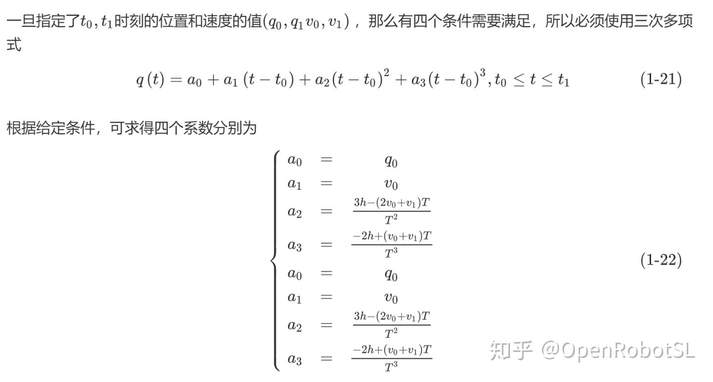
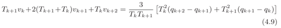
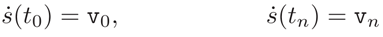

Home
三次多项式轨迹
五次多项式轨迹
七次多项式轨迹
三次样条曲线
基于S型曲线的连续多段曲线插补平滑过渡的规划算法
三次多项式轨迹

matlab仿真代码参见examplesCode文件夹下的example2_6.m文件
%example2.6
clc
clear
%轨迹定义条件
%时间
t0=0;
t1=8;
%位置和速度（a）
q0=0;
q1=10;
v0=0;
v1=0;
%利用公式（1-22）求系数
h=q1-q0;
T=t1-t0;
a0=q0;
a1=v0;
a2=(3*h-(2*v0+v1)*T)/(T*T);
a3=(-2*h+(v0+v1)*T)/(T*T*T);
%轨迹生成
t=t0:0.1:t1;
%位置
q=a0+a1*power((t-t0),1)+a2*power((t-t0),2)+a3*power((t-t0),3);
%速度
v=a1+2*a2*power((t-t0),1)+3*a3*power((t-t0),2);
%加速度
acc=2*a2+6*a3*power((t-t0),1);
%绘图
subplot(3,2,1)
plot(t,q,'r');
ylabel('position')
grid on
subplot(3,2,3)
plot(t,v,'b');
ylabel('velocity')
grid on
subplot(3,2,5)
plot(t,acc,'g');
xlabel('(a)');
ylabel('acceleration')
grid on
%时间
t0=0;
t1=8;
%位置和速度（b）
q0=0;
q1=10;
v0=-5;
v1=-10;
%利用公式（1-22）求系数
h=q1-q0;
T=t1-t0;
a0=q0;
a1=v0;
a2=(3*h-(2*v0+v1)*T)/(T*T);
a3=(-2*h+(v0+v1)*T)/(T*T*T);
%轨迹生成
t=t0:0.1:t1;
%位置
q=a0+a1*power((t-t0),1)+a2*power((t-t0),2)+a3*power((t-t0),3);
%速度
v=a1+2*a2*power((t-t0),1)+3*a3*power((t-t0),2);
%加速度
acc=2*a2+6*a3*power((t-t0),1);
%绘图
subplot(3,2,2)
plot(t,q,'r');
ylabel('position')
grid on
subplot(3,2,4)
plot(t,v,'b');
ylabel('velocity')
grid on
subplot(3,2,6)
plot(t,acc,'g');
xlabel('(b)');
ylabel('acceleration')
grid onmatlab仿真代码参见examplesCode文件夹下的example2_7.m文件
%example2.7
clc
clear
%轨迹定义条件
t_array=[0,2,4,8,10];
q_array=[10,20,0,30,40];
v_array=[0,-10,10,3,0];
%计算轨迹
%初始位置
t=t_array(1);
q=q_array(1);
v=v_array(1);
%计算各段轨迹
for k=1:length(t_array)-1
%计算各段多项式的系数
h(k)=q_array(k+1)-q_array(k);
T(k)=t_array(k+1)-t_array(k);
a0(k)=q_array(k);
a1(k)=v_array(k);
a2(k)=(3*h(k)-(2*v_array(k)+v_array(k+1))*T(k))/(T(k)*T(k));
a3(k)=(-2*h(k)+(v_array(k)+v_array(k+1))*T(k))/(T(k)*T(k)*T(k));
%生成各段轨迹密化的数据点
%局部时间坐标
tau=t_array(k):T(k)/100:t_array(k+1);
%全局时间坐标，由局部时间坐标组成
t=[t,tau(2:end)];
%局部位置坐标
qk=a0(k)+a1(k)*power(tau-tau(k),1)+a2(k)*power(tau-tau(k),2)+a3(k)*power(tau-tau(k),3);
%全局位置坐标
q=[q,qk(2:end)];
%速度
vk=a1(k)+2*a2(k)*power(tau-tau(k),1)+3*a3(k)*power(tau-tau(k),2);
v=[v,vk(2:end)];
%加速度
acck=2*a2(k)+6*a3(k)*power(tau-tau(k),1);
if(k==1)
acc=2*a2(k);
end
acc=[acc,acck(2:end)];
end
%绘图
subplot(3,1,1);
h1=plot(t,q,'-r');
legend(h1,'第一种方式')
hold on;
plot(t_array,q_array,'or');
axis([0,10,-5,45]);
ylabel('position')
grid on;
subplot(3,1,2);
plot(t_array,v_array,'ob');
hold on;
plot(t,v,'b');
axis([0,10,-20,15]);
ylabel('velocity')
grid on;
subplot(3,1,3);
plot(t,acc,'g');
hold on
axis([0,10,-45,45]);
ylabel('acceleration')
grid on;matlab仿真代码参见examplesCode文件夹下的example2_8.m文件
%example2.8
clc
clear
%轨迹定义条件
t_array=[0,2,4,8,10];
q_array=[10,20,0,30,40];
v_array=[0,-10,10,3,0];
%计算轨迹
%初始位置
t=t_array(1);
q=q_array(1);
v=v_array(1);
v_array2=v_array;
for k=1:length(t_array)-1
%按照式（1-23）式确定中间点的速度值
if(k>1)
dk1=(q_array(k)-q_array(k-1))/(t_array(k)-t_array(k-1));
dk2=(q_array(k+1)-q_array(k))/(t_array(k+1)-t_array(k));
if((dk2>=0 && dk1>=0) || (dk2<=0 && dk1<=0))
v_array2(k)=1.0/2.0*(dk1+dk2);
else
v_array2(k)=0;
end
end
end
%计算各段轨迹
for k=1:length(t_array)-1
%计算各段多项式的系数
h(k)=q_array(k+1)-q_array(k);
T(k)=t_array(k+1)-t_array(k);
a0(k)=q_array(k);
a1(k)=v_array2(k);
a2(k)=(3*h(k)-(2*v_array2(k)+v_array2(k+1))*T(k))/(T(k)*T(k));
a3(k)=(-2*h(k)+(v_array2(k)+v_array2(k+1))*T(k))/(T(k)*T(k)*T(k));
%生成各段轨迹密化的数据点
%局部时间坐标
tau=t_array(k):T(k)/100:t_array(k+1);
%全局时间坐标，由局部时间坐标组成
t=[t,tau(2:end)];
%局部位置坐标
qk=a0(k)+a1(k)*power(tau-tau(k),1)+a2(k)*power(tau-tau(k),2)+a3(k)*power(tau-tau(k),3);
%全局位置坐标
q=[q,qk(2:end)];
%速度
vk=a1(k)+2*a2(k)*power(tau-tau(k),1)+3*a3(k)*power(tau-tau(k),2);
v=[v,vk(2:end)];
%加速度
acck=2*a2(k)+6*a3(k)*power(tau-tau(k),1);
if(k==1)
acc=2*a2(k);
end
acc=[acc,acck(2:end)];
end
%绘图
subplot(3,1,1);
h2=plot(t,q,'--r');
legend(h2,'第二种方式')
hold on;
plot(t_array,q_array,'^r');
axis([0,10,-5,45]);
ylabel('position')
grid on;
subplot(3,1,2);
plot(t_array,v_array2,'^b');
hold on;
plot(t,v,'--b');
axis([0,10,-20,15]);
ylabel('velocity')
grid on;
subplot(3,1,3);
plot(t,acc,'--g');
axis([0,10,-45,45]);
ylabel('acceleration')
grid on;小结
前面所述的三次多项式实际是速度规划里面常说的PVT算法。PVT 模 式 是 指 位 置 — 速 度 — 时 间（Position-Velocity-Time）模式。PVT模式是一种简单又有效的运动控制模式，用户只需要给定离散点的位置、速度和时间，运动控制卡的插补算法将会生成一条连续、平滑的运动路径。
PVT 算法除了给定各数据点的“位置、速度、时间”之外，还可以通过其他形式给出参数。根据输入参数的不同，PVT 算法可分为 PVT 描述方式、Complete 描述方式、Percent 描述方式和 Continuous 描述方式。
前面所述的三次多项式实际是PVT描述方式，PVT描述方式直接给定各数据点的“位置、速度、时间”。一般使用多项式插值，若用三次多项式表示位移-时间关系，每两个相邻数据点可单独确定一个三次曲线。没有限制各段之间的衔接条件，不能保证各个点处速度曲线平滑过渡，因此不能保证加速度连续。其他描述方式后面会逐渐介绍。
参考文献
[1]Biagiotti L, Melchiorri C. Trajectory Planning for Automatic Machines and Robots[M]. Springer Berlin Heidelberg, 2009.
[2]东梁. 嵌入式运动控制器若干关键技术的研究与实现[D].2015.
多项式轨迹--五次多项式
matlab仿真代码参见examplesCode文件夹下的example2_9.m文件
%example2.9
clc
clear
%轨迹定义条件
%时间
t0=0;
t1=8;
%位置和速度（a）
q0=0;
q1=10;
v0=0;
v1=0;
acc0=0;
acc1=0;
%利用公式（1-25）求系数
h=q1-q0;
T=t1-t0;
a0=q0;
a1=v0;
a2=1.0/2*acc0;
a3=1.0/(2*T*T*T)*(20*h-(8*v1+12*v0)*T+(acc1-3*acc0)/(T*T));
a4=1.0/(2*T*T*T*T)*(-30*h+(14*v1+16*v0)*T+(3*acc0-2*acc1)/(T*T));
a5=1.0/(2*T*T*T*T*T)*(12*h-6*(v1+v0)*T+(acc1-acc0)/(T*T));
%轨迹生成
t=t0:0.1:t1;
%位置
q=a0+a1*power((t-t0),1)+a2*power((t-t0),2)+a3*power((t-t0),3)+...
a4*power(t-t0,4)+a5*power(t-t0,5);
%速度
v=a1+2*a2*power((t-t0),1)+3*a3*power((t-t0),2)+4*a4*power(t-t0,3)+...
5*a5*power(t-t0,4);
%加速度
acc=2*a2+6*a3*power((t-t0),1)+12*a4*power(t-t0,2)+20*a5*power(t-t0,3);
%绘图
subplot(3,2,1)
plot(t,q,'r');
axis([0,8,0,11])
ylabel('position')
grid on
subplot(3,2,3)
plot(t,v,'b');
axis([0,8,-1,2.5])
ylabel('velocity')
grid on
subplot(3,2,5)
plot(t,acc,'g');
xlabel('(a)');
ylabel('acceleration')
grid on
%时间
t0=0;
t1=8;
%位置和速度（a）
q0=0;
q1=10;
v0=-5;
v1=-10;
acc0=0;
acc1=0;
%利用公式（1-25）求系数
h=q1-q0;
T=t1-t0;
a0=q0;
a1=v0;
a2=1.0/2*acc0;
a3=1.0/(2*T*T*T)*(20*h-(8*v1+12*v0)*T+(acc1-3*acc0)/(T*T));
a4=1.0/(2*T*T*T*T)*((-30*h+(14*v1+16*v0)*T)+(3*acc0-2*acc1)/(T*T));
a5=1.0/(2*T*T*T*T*T)*(12*h-6*(v1+v0)*T+(acc1-acc0)/(T*T));
%轨迹生成
t=t0:0.1:t1;
%位置
q=a0+a1*power((t-t0),1)+a2*power((t-t0),2)+a3*power((t-t0),3)+...
a4*power(t-t0,4)+a5*power(t-t0,5);
%速度
v=a1+2*a2*power((t-t0),1)+3*a3*power((t-t0),2)+4*a4*power(t-t0,3)+...
5*a5*power(t-t0,4);
%加速度
acc=2*a2+6*a3*power((t-t0),1)+12*a4*power(t-t0,2)+20*a5*power(t-t0,3);
%绘图
subplot(3,2,2)
plot(t,q,'r');
axis([0,8,-5,30])
ylabel('position')
grid on
subplot(3,2,4)
plot(t,v,'b');
ylabel('velocity')
grid on
subplot(3,2,6)
plot(t,acc,'g');
xlabel('(b)');
ylabel('acceleration')
grid onExample 2.10:对于example2.7、example2.8 的条件（参见上一篇博客轨迹规划--三次多项式轨迹）使用五次多项式确定轨迹，如下图所示。并与example2.8对比，发现“平滑度”得到了改善。

图8 Example2.7的条件用五次多项式确定的轨迹
matlab仿真代码参见examplesCode文件夹下的example2_10.m文件
%example2.10
clc
clear
close('all')
%轨迹定义条件
%时间、位置和速度（a）
t_array=[0,2,4,8,10];
q_array=[10,20,0,30,40];
v_array=[0,-10,10,3,0];
%起点和终点加速度假设为0，中间点加速度都初始化为0，
acc_array=[0,0,0,0,0];
%计算轨迹
%初始位置
t=t_array(1);
q=q_array(1);
v=v_array(1);
v_array2=v_array;
acc=acc_array(1);
for k=1:length(t_array)-1
%按照式（1-23）式确定中间点的速度值
if(k>1)
dk1=(q_array(k)-q_array(k-1))/(t_array(k)-t_array(k-1));
dk2=(q_array(k+1)-q_array(k))/(t_array(k+1)-t_array(k));
if((dk2>=0 && dk1>=0) || (dk2<=0 && dk1<=0))
v_array2(k)=1.0/2.0*(dk1+dk2);
else
v_array2(k)=0;
end
end
end
for k=1:length(t_array)-1
%利用公式（1-25）求系数
%计算各段多项式的系数
h(k)=q_array(k+1)-q_array(k);
T(k)=t_array(k+1)-t_array(k);
a0(k)=q_array(k);
a1(k)=v_array2(k);
a2(k)=1.0/2*acc_array(k);
a3(k)=1.0/(2*T(k)*T(k)*T(k))*(20*h(k)-(8*v_array2(k+1)+12*v_array2(k))*T(k)+(acc_array(k+1)-3*acc_array(k))/(T(k)*T(k)));
a4(k)=1.0/(2*T(k)*T(k)*T(k)*T(k))*(-30*h(k)+(14*v_array2(k+1)+16*v_array2(k))*T(k)+(3*acc_array(k)-2*acc_array(k+1))/(T(k)*T(k)));
a5(k)=1.0/(2*T(k)*T(k)*T(k)*T(k)*T(k))*(12*h(k)-6*(v_array2(k+1)+v_array2(k))*T(k)+(acc_array(k+1)-acc_array(k))/(T(k)*T(k)));
%生成各段轨迹密化的数据点
%局部时间坐标
tau=t_array(k):T(k)/100:t_array(k+1);
%全局时间坐标，由局部时间坐标组成
t=[t,tau(2:end)];
%位置
qk=a0(k)+a1(k)*power(tau-tau(k),1)+a2(k)*power(tau-tau(k),2)+a3(k)*power(tau-tau(k),3)+...
a4(k)*power(tau-tau(k),4)+a5(k)*power(tau-tau(k),5);
%全局位置坐标
q=[q,qk(2:end)];
%速度
vk=a1(k)+2*a2(k)*power(tau-tau(k),1)+3*a3(k)*power(tau-tau(k),2)+4*a4(k)*power(tau-tau(k),3)+...
5*a5(k)*power(tau-tau(k),4);
v=[v,vk(2:end)];
%加速度
acck=2*a2(k)+6*a3(k)*power(tau-tau(k),1)+12*a4(k)*power(tau-tau(k),2)+20*a5(k)*power(tau-tau(k),3);
acc=[acc,acck(2:end)];
end
%绘图
subplot(3,1,1)
plot(t,q,'r');
hold on
plot(t_array,q_array,'o');
axis([0,10,-5,45])
ylabel('position')
grid on
subplot(3,1,2)
plot(t,v,'b');
hold on
plot(t_array,v_array2,'o');
axis([0,10,-20,15])
ylabel('velocity')
grid on
subplot(3,1,3)
plot(t,acc,'g');
axis([0,10,-35,35])
ylabel('acceleration')
grid on参考文献
Biagiotti L, Melchiorri C. Trajectory Planning for Automatic Machines and Robots[M]. Springer Berlin Heidelberg, 2009.
多项式轨迹--七次多项式
matlab仿真代码参见examplesCode文件夹下的example2_11.m文件
%example2.11,七次多项式轨迹
clc
clear
close('all')
%轨迹定义条件
t0=0;t1=8;
q0=0;q1=10;
v0=0;v1=0;
acc0=0;acc1=0;
j0=0;j1=0;
%利用（1-26）式求系数
h=q1-q0;
T=t1-t0;
a0=q0;
a1=v0;
a2=acc0/2;
a3=j0/6;
a4=1.0/(6*power(T,4))*(210*h-T*((30*acc0-15*acc1)*T+(4*j0+j1)*T*T+120*v0+90*v0));
a5=1.0/(2*power(T,5))*(-168*h+T*((20*acc0-14*acc1)*T+(2*j0+j1)*T*T+90*v0+78*v1));
a6=1.0/(6*power(T,6))*(420*h-T*((45*acc0-39*acc1)*T+(4*j0+3*j1)*T*T+216*v0+204*v1));
a7=1.0/(6*power(T,7))*(-120*h+T*((12*acc0-12*acc1)*T+(j0+j1)*T*T+60*v0+60*v1));
%计算轨迹
t=linspace(t0,t1,100);
%位置
q=a0+a1*power(t-t0,1)+a2*power(t-t0,2)+a3*power(t-t0,3)+a4*power(t-t0,4)+...
+a5*power(t-t0,5)+a6*power(t-t0,6)+a7*power(t-t0,7);
%速度
v=a1+2*a2*power(t-t0,1)+3*a3*power(t-t0,2)+4*a4*power(t-t0,3)+5*a5*power(t-t0,4)+...
+6*a6*power(t-t0,5)+7*a7*power(t-t0,6);
%加速度
acc=2*a2+2*3*a3*power(t-t0,1)+3*4*a4*power(t-t0,2)+4*5*a5*power(t-t0,3)+...
+5*6*a6*power(t-t0,4)+6*7*a7*power(t-t0,5);
%加加速度
j=2*3*a3+2*3*4*a4*power(t-t0,1)+3*4*5*a5*power(t-t0,2)+...
+4*5*6*a6*power(t-t0,3)+5*6*7*a7*power(t-t0,4);
%绘图
subplot(4,1,1)
plot(t,q,'r');
hold on
axis([0,8,-1,12])
ylabel('position')
grid on
subplot(4,1,2)
plot(t,v,'b');
hold on
axis([0,8,-1,3])
ylabel('velocity')
grid on
subplot(4,1,3)
plot(t,acc,'g');
axis([0,8,-1.5,1.5])
ylabel('acceleration')
grid on
subplot(4,1,4)
plot(t,j,'k');
axis([0,8,-1.1,1])
ylabel('jerk')
grid on参考文献：
[1]Biagiotti L, Melchiorri C. Trajectory Planning for Automatic Machines and Robots[M]. Springer Berlin Heidelberg, 2009.
写在前面
在一些避障的应用场景下，一般都是先在任务空间中对多轴机械臂的末端进行路径规划，得到的是末端的运动路径点数据。这条轨迹只包含位置关系，并没有告诉机器人应该以怎样的速度、加速度运动，这就需要进行带时间参数的轨迹规划处理，也就是对这条空间轨迹进行速度、加速度约束，并且计算运动到每个路点的时间，高级的算法有TOPP等，一般的呢就是贝塞尔、三次准/非/均匀B、五次及三次样条等。下面从最简单的三次样条开始讨论。
三次样条曲线性质
当给出n+1个点时，可以使用n个p次多项式（通常较低）代替唯一的n次插值多项式，每个多项式定义一段轨迹。以这种方式定义的总函数s（t）称为p阶的样条曲线。p的值是根据所需的样条连续度来选择的。例如，为了在两个连续段之间发生过渡的时刻tk获得速度和加速度的连续性，可以假定多项式的阶数p＝3（三次多项式）。
定义三次样条曲线的函数形式为：
这段轨迹由n个三次多项式构成，并且每个多项式需要计算四个参数。由于n个多项式是定义一条通过n+1点的轨迹所必需的，因此需要确定的系数总数为4n。为了解决这个问题，必须考虑以下条件：
- 给定点插值的2n条件，因为每一个三次函数必须在其极值处穿过点。
- n-1个条件，过渡点的速度要连续；
- n-1个条件，过渡点的加速度要连续；
这样的话，就已经限制了2n+2(n-1)个条件，还剩下2个自由度还未限制。通过前面分析，还需要两个限制条件才行，这里讨论的就是初始点和终点的速度以及加速度。下面是几种可能的选择，可以任意选择：

通常情况，样条曲线具有如下几个特性：
- 对于由给定点(tk,qk),k=0,…n得到的p阶样条曲线s(t)，[n(p+1)]个参数可以确定
- 给定n+1个点，并且给定边界条件，则p阶插值样条曲线s(t)能被唯一确定
- 用于构造样条曲线的多项式的阶数p不取决于数据点的数目
- 函数s(t)p-1阶连续可导
- 自然样条曲线是指初始加速度和最终加速度均为0的样条曲线
当指定初始速度v0和最终速度vn时的参数计算（也就是v0和vn已知）
在定义自动机械的轨迹时，速度剖面的连续性条件至关重要。因此，计算样条曲线的典型选择是指定初始和最终速度v0和vn。因此，给定点(tk,qk),k=0,…n以及速度的边界条件（初始速度和最终速度）v0,vn，就有如下几个条件成立：
可以最终确定样条曲线的函数s(t)为
系数ak,i可以由以下算法进行确定：
第一种情况，如果中间点（插补点）的速度我们已知，也就是vk,k=1,…,n-1，对于每段三次样条曲线，有
其中，$T_{k}=t_{k+1}-t_{k}$。通过解上面的方程，可以得到
这就可以把每一段曲线的系数都求出来，从而得到样条曲线。这是最简单的情况！
子函数如下：
% 三次样条：指定初始速度v0和终止速度vn，并且中间插补点的速度已知，这是最简单的情况
% Input：
% q：给定点的位置
% t：给定点位置对应的时间
% v：包括给定起始、中间及终止速度的速度向量
% tt：插补周期
% Output：
% yy dyy ddyy：样条曲线函数值、速度、加速度值
function [yy dyy ddyy] = cubicSpline_1(q, t, v, tt)
if length(q) ~= length(t)
error('输入的数据应成对')
end
n = length(q);
T = t(n) - t(1); % 运行总时长
nn = T / tt; % 总点数
yy = zeros(1, nn);
dyy = zeros(1, nn);
ddyy = zeros(1, nn);
j = 1;
for i = 1: n-1
Tk = t(i+1) - t(i);
a0 = q(i);
a1 = v(i);
a2 = (1/Tk) * ((3*(q(i+1)-q(i)))/Tk - 2*v(i) - v(i+1));
a3 = (1/(Tk*Tk)) * ((2*(q(i)-q(i+1)))/Tk + v(i) + v(i+1));
for tk = t(i): tt: t(i+1)
if i > 1 && tk == t(i)
continue
end
yy(j) = a0 + a1*(tk-t(i)) + a2*power(tk-t(i), 2) + a3*power(tk-t(i), 3);
dyy(j) = a1 + 2*a2*(tk-t(i)) + 3*a3*power(tk-t(i), 2);
ddyy(j) = 2*a2 + 6*a3*(tk-t(i));
j = j + 1;
end
end
end第二种情况，如果中间点的速度我们未知，也就是vk,k=1,…,n-1均未知，然而这些值是必须被计算的。为此，考虑了中间加速度的连续条件：
在这些条件下，通过考虑参数$a_{k, 2}, \quad a_{k, 3}, \quad a_{k+1,2}$的表达式乘以$\left(T_{k} T_{k+1}\right) / 2$，在简单计算整理之后能够得到

其中k=0,…,n-2。
上面的关系可以整理成矩阵的形式，$A^{\prime} v^{\prime}=c^{\prime}$，其中

其中常数项ck仅取决于中间位置和已知的样条曲线段的持续时间Tk。由于速度v0和vn也是已知的，所以可以消除矩阵A‘的相应列并获得
也就是
例子
另外v0=2，v6=-3。
% 三次样条：指定初始速度v0和终止速度vn，但是中间点速度未知
% Input：
% q：给定点的位置
% t：给定点位置对应的时间
% v0：初始速度
% vn：终止速度
% tt：插补周期
% Output：
% yy dyy ddyy：样条曲线函数值、速度、加速度值
function [yy dyy ddyy] = cubicSpline_2(q, t, v0, vn, tt);
if length(q) ~= length(t)
error('输入的数据应成对');
end
n = length(q);
c = zeros(n-2, 1);
% 矩阵A是个(n-2)*(n-2)的对角占优矩阵
A = zeros(n-2);
for i = 1: n-2
Tk_1 = t(i+2) - t(i+1);
Tk = t(i+1) - t(i);
if i == 1
A(i, i) = 2*(Tk + Tk_1);
A(i, i+1) = Tk;
c(i, 1) = (3/(Tk*Tk_1))*(Tk^2*(q(i+2)-q(i+1))+Tk_1^2*(q(i+1)-q(i))) - Tk_1*v0;
elseif i == n-2
A(i, i-1) = Tk_1;
A(i, i) = 2*(Tk + Tk_1);
c(i, 1) = (3/(Tk*Tk_1))*(Tk^2*(q(i+2)-q(i+1))+Tk_1^2*(q(i+1)-q(i))) - Tk*vn;
else
A(i, i-1) = Tk_1;
A(i, i) = 2*(Tk + Tk_1);
A(i, i+1) = Tk;
c(i, 1) = (3/(Tk*Tk_1))*(Tk^2*(q(i+2)-q(i+1))+Tk_1^2*(q(i+1)-q(i)));
end
end
% 经过上述步骤得到对角占优矩阵A和c
% vk = A \ c; % 这一步matlab计算很慢，应换成追赶法求vk
for i = 1: n-2
a(i) = A(i, i); % 对角线
if i == n-3
b(i) = A(i, i+1); % 上边
d(i) = A(i+1, i); % 下边
continue;
elseif i < n-2
b(i) = A(i, i+1); % 上边
d(i) = A(i+1, i); % 下边
end
end
[~, ~, vk] = crout(a, b, d, c); % 追赶法
% 得到中间插补点的速度vk，然后调用cubicSpline_1即可
v_ = [v0, vk', vn];
[yy dyy ddyy] = cubicSpline_1(q, t, v_, tt);
end
%追赶法求解三对角线性方程组，Ax=b，A用一维数组a，c，d存储。
function [L,U,x]=crout(a,c,d,b)%数组a存储三角矩阵A的主对角线元素，c、d存储主对角线上边下边带宽为1的元素
n=length(a);
n1=length(c);
n2=length(d);
%错误检查
if n1~=n2%存储矩阵的数组维数错误
error('MATLAB:Crout:不是三对角矩阵，参数数组中元素个数错误.');
elseif n~=n1+1
error('MATLAB:Crout:不是三对角矩阵，参数数组中元素个数错误.');
end
%初始化
L=zeros(n);%生成n*n的全零矩阵
U=zeros(n);
p=1:n;
q=1:n-1;
x=1:n;
y=1:n;
%追赶法程序主体
p(1)=a(1);
for i=1:n-1
q(i)=c(i)/p(i);
p(i+1)=a(i+1)-d(i)*q(i);%d的下标改为1到n-1
end
%正解y
y(1)=b(1)/p(1);%用x存储y
for i=2:n
y(i)=(b(i)-d(i-1)*y(i-1))/p(i);
end
%倒解x
x(n)=y(n);
for i=(n-1):-1:1
x(i)=y(i)-q(i)*x(i+1);
end
%L,U矩阵
for i=1:n
L(i,i)=p(i);
U(i,i)=1;
end
for i=1:n-1
L(i+1,i)=d(i);
U(i,i+1)=q(i);
end
end %end of function测试：
%% 自写cubicSpline_2函数测试
q = [3, -2, -5, 0, 6, 12, 8];
t = [0, 5, 7, 8, 10, 15, 18];
n = length(t);
v0 = 2; vn = -3; tt = 0.1;
[yy dyy ddyy] = cubicSpline_2(q, t, v0, vn, tt);
subplot(3, 1, 1)
plot(t, q, 'o');
ylabel('位置')
grid on
hold on
plot([t(1):tt:t(n)], yy);
subplot(3, 1, 2)
plot([t(1), t(n)], [v0, vn], 'o');
grid on
hold on
plot([t(1):tt:t(n)], dyy);
ylabel('速度')
subplot(3, 1, 3)
grid on
hold on
plot([t(1):tt:t(n)], ddyy);
ylabel('加速度')周期三次样条：没有指定初始速度v0和最终速度vn（也就是v0和vn未知）
在许多应用中，要执行的运动是周期性的，即初始位置和最终位置相同。在这种情况下，利用为计算样条曲线而指定的最后两个自由度，以使曲线具有初始和最终速度和加速度的连续性。因此，计算系数的方法与先前报告的略有不同。事实上，在这种情况下，必须考虑代替任意选择的初始和最终速度v0和vn的条件。
最后一个公式可以写成：
代入系数表达式后，从（4.8）中得到
通过将该方程添加到系统（4.10）中，并考虑到在这种情况下，速度vn等于v0但未知（因此在（4.10）中，必须在左侧移动$T_{n-2}v_n$和$T_1v_0$），计算速度的线性系统变为
系统的矩阵不再是三对角的。这种情况被称为循环三对角系统，也存在有效的求解计算方法。一旦获得速度v0，…，vn?1，就可以通过（4.8）计算样条曲线的系数。
例子
% 三次样条：周期三次样条，没有指定初始速度v0和终止速度vn，也就是v0和vn未知
% Input：
% q：给定点的位置
% t：给定点位置对应的时间
% tt：插补周期
% Output：
% yy dyy ddyy：样条曲线函数值、速度、加速度值
function [yy dyy ddyy] = cubicSpline_3(q, t, tt)
if length(q) ~= length(t)
error('输入的数据应成对');
end
n = length(q);
c = zeros(n-1, 1);
% 矩阵A是个(n-1)*(n-1)的循环三对角矩阵
A = zeros(n-1);
for i = 1: n-1
if i == 1
Tn_1 = t(n) - t(n-1);
T0 = t(i+1) - t(i);
A(i, i) = 2*(Tn_1 + T0);
A(i, i+1) = Tn_1;
A(i, n-1) = T0;
c(i, 1) = (3/(Tn_1*T0))*((Tn_1^2)*(q(i+1)-q(i))+(T0^2)*(q(n)-q(n-1)));
else
Tk_1 = t(i+1) - t(i);
Tk = t(i) - t(i-1);
c(i, 1) = (3/(Tk*Tk_1))*(Tk^2*(q(i+1)-q(i))+Tk_1^2*(q(i)-q(i-1)));
if i == n-1
A(i, 1) = Tk_1;
A(i, i-1) = Tk_1;
A(i, i) = 2*(Tk + Tk_1);
else
A(i, i-1) = Tk_1;
A(i, i) = 2*(Tk + Tk_1);
A(i, i+1) = Tk;
end
end
end
% 经过上述步骤得到矩阵A和c
vk = A \ c; % 这一步matlab计算很慢，应换成追赶法求vk
% 这个vk的第一个值为v0，然后v0和vn相等
% 得到中间插补点的速度vk，然后调用cubicSpline_1即可
v_ = [vk', vk(1)];
% v_ = [-2.28 -2.78 2.99 5.14 2.15 -1.8281 -2.28]
[yy dyy ddyy] = cubicSpline_1(q, t, v_, tt);
end测试：
%% 自写cubicSpline_3函数测试
q = [3, -2, -5, 0, 6, 12, 3];
t = [0, 5, 7, 8, 10, 15, 18];
t1 = [18, 23, 25, 26, 28, 33, 36];
n = length(t);
tt = 0.1;
[yy dyy ddyy] = cubicSpline_3(q, t, tt);
[yy_, dyy_, ddyy_] = cubicSpline_3(q, t1, tt);
subplot(3, 1, 1)
plot(t, q, 'o');
ylabel('位置')
grid on
hold on
plot([t(1):tt:t(n)], yy);
plot([t1(1):tt:t1(n)], yy_);
subplot(3, 1, 2)
% plot([t(1), t(n)], [v0, vn], 'o');
grid on
hold on
plot([t(1):tt:t(n)], dyy);
plot([t1(1):tt:t1(n)], dyy_);
ylabel('速度')
subplot(3, 1, 3)
grid on
hold on
plot([t(1):tt:t(n)], ddyy);
plot([t1(1):tt:t1(n)], ddyy_);
ylabel('加速度')具有指定初始速度v0和最终速度vn的三次样条（v0和vn已知）：基于加速度的计算
定义三次样条还有一种方法：样条曲线的一般多项式qk（t）可以表示为在其端点处计算的二阶导数的函数，也就是加速度$\ddot{q}\left(t_{k}\right)=\omega_{k}{k=0,...,n}$,，而不是速度$v_k$。可以计算得到此时的多项式表达式为
这样的话，速度和加速度就是如下计算式
这样的话，未知数就是加速度$\omega_k$，因为从上面的计算式可以发现，曲线的未知参数就是加速度了，因此它是唯一定义样条曲线的。由于中间点的速度和加速度的连续性，我们得到
结合式（4.15）、（4.17）和（4.18），可以得到
其中k=1,…,n-1。另外，初始速度和最终速度有如下条件

由此可以推导得到
结合（4.19）-（4.21），可以得到如下线性系统
其中，(n+1)阶三对角对称矩阵A（其中未知参数$\omega=[\omega_0,\omega_1,...,\omega_n]^T$）为
同样是利用追赶法解三对角线方程组，通过将解方程得到的$\omega _k$带入（4.14）中，最终得到样条曲线。除了利用（4.14）来描述三次样条曲线之外，显然，还是可以根据初始定义来描述三次样条曲线，即
其中样条曲线的参数a呢就可以通过已知的点$q_k$和已经求得的加速度$\omega _k$来计算，计算式如下
这个方法主要是为下面的方法做准备，因此不写例子。
具有指定初始、最终速度以及加速度的三次样条曲线
样条曲线是一个二阶连续导数的函数，但通常不可能同时指定初始速度和最终速度以及加速度。因此，样条曲线在其末端的特征是速度或加速度的不连续性，一般情况下我们会指定初始和最终速度，则此时初始和最终加速度难以保证连续，会出现突变。下面需要做的就是需要保证在指定初始速度和最终速度的前提下，还要保证初始、最终加速度从0开始连续变化。如果这些不连续代表一个问题，可以采用不同的方法：
- 一个5次多项式函数可以用于第一个和最后一个域，其缺点是允许在这些段中有更大的超调，并且稍微增加了计算负担；
- 在第一段和最后一段中添加两个自由额外点（从这个意义上说，这些点不能先验地固定），并通过施加所需的速度和加速度的初始值和最终值来计算它们的值。
后一种方法现在详细说明。让我们考虑一个要插值的n-1点向量，这两个向量中都没有第二个值以及倒数第二个值，也就是q1、t1和qn-1、tn-1（目前我还不知道为啥要这么做。。。）
对应的时间节点为
以及同时考虑速度v0，vn和加速度a0，an的边界条件。为了施加所需的加速度，增加了两个额外的点$\bar{q}{1}$ 和 $\bar{q}{n-1}$。时间瞬间$\overline{t_{1}}$ 和 $\bar{t}_{n-1}$分别位于t0和t2之间以及tn-2和tn之间。不过可以分析得到，这种处理办法虽然能够对一条轨迹施加轨迹长度、初始速度、终止速度、初始加速度、终止加速度这五种约束条件，但是前提是额外增加两个轨迹点以及时间点，这样可能破坏时间最优规划的初衷，额外增加约束可能也会导致轨迹灵活性变差。。。
增加的这两个点，可以通过已知的变量去表达这两个点，即初始/最终的位置、速度以及加速度（q0/qn,v0/vn,a0/an）同时包括在这些点上的加速度w1和wn-1（其中边界点的加速度是用a0和an来表示，而中间点的加速度是用w来表示）。这样，就可以考虑初始加速度和最终加速度的约束。
将（4.26）和（4.27）替换掉（4.24）中的有关项，通过重新排列n-1方程，我们得到一个线性系统
其中
注意，T0、T1和Tn-2、Tn-1分别是$\overline{t_{1}}$ 和 $\bar{t}_{n-1}$的函数，可以在间隔（t0、t2）和（tn-2、tn）中任意选择，例如
通过求解方程组（4.28）可以得到中间插补点的加速度为
与边界值a0和an一起，就可以根据（4.14）或者（4.25）计算整体的样条曲线。
例子
其中v0=2，vn=-3，a0=0，an=0。额外增加的两个时间点t1=2.5，t7=16.5，当然也可以任意选择。
% 三次样条：指定初始、终止速度以及加速度，也就是v0，vn，a0，an已知
% 这个方法需要增加两个额外的点q1_和qn-1_
% q1_在原有q1和q2之间，qn-1_在原有的qn-1和qn之间
% 这两个额外点对应的时间t1_和tn-1_需要计算，可以任意选择，本程序选择取平均值
% Input：
% q：给定点的位置
% t：给定点位置对应的时间
% v0：初始速度
% vn：终止速度
% a0：初始加速度
% an：终止加速度
% tt：插补周期
% Output：
% yy dyy ddyy：样条曲线函数值、速度、加速度值
function [yy dyy ddyy q1 qn_1] = cubicSpline_4(q, t, v0, vn, a0, an, tt)
if length(q) ~= length(t)
error('输入的数据应成对');
end
n = length(q); % 原来的点数量
% 增加两个额外点q1_和qn-1_，计算两点对应的时间点
t1_ = (t(1)+t(2)) / 2;
tn_1_ = (t(n-1)+t(n)) / 2;
% 更新时间向量
t = [t(1), t1_, t(2: n-1), tn_1_, t(n)];
% 更新点的数量
n = n + 2;
% 矩阵A是个(n-2)阶对角占优矩阵
A = zeros(n-2);
c = zeros(n-2, 1);
for i = 1: n-2
Tk_1 = t(i+2) - t(i+1);
Tk = t(i+1) - t(i);
if i == 1
A(i, i) = 2*Tk_1 + Tk*(3+Tk/Tk_1);
A(i, i+1) = Tk_1;
c(i, 1) = 6*((q(2)-q(1))/Tk_1-v0*(1+Tk/Tk_1)-a0*(0.5+Tk/(3*Tk_1))*Tk);
elseif i == 2
T0 = t(2)-t(1);
A(i, i-1) = Tk - (T0^2)/Tk;
A(i, i) = 2*(Tk + Tk_1);
A(i, i+1) = Tk_1;
c(i, 1) = 6*((q(3)-q(2))/Tk_1-(q(2)-q(1))/Tk+v0*(T0/Tk)+a0*(T0^2)/(3*Tk));
elseif i == n-2-1
Tn_1 = t(n) - t(n-1);
A(i, i-1) = Tk;
A(i, i) = 2*(Tk + Tk_1);
A(i, i+1) = Tk_1 - (Tn_1^2)/Tk_1;
c(i, 1) = 6*((q(n-2)-q(n-3))/Tk_1-(q(n-3)-q(n-4))/Tk-vn*(Tn_1/Tk_1)+an*(Tn_1^2)/(3*Tk_1));
elseif i == n-2
A(i, i) = 2*Tk + Tk_1*(3+Tk_1/Tk);
A(i, i-1) = Tk;
c(i, 1) = 6*((q(n-3)-q(n-2))/Tk+vn*(1+Tk_1/Tk)-an*(0.5+Tk_1/(3*Tk))*Tk_1);
else
A(i, i-1) = Tk;
A(i, i) = 2*(Tk + Tk_1);
A(i, i+1) = Tk_1;
c(i, 1) = 6*((q(i+1)-q(i))/Tk_1-(q(i)-q(i-1))/Tk);
end
end
% 经过上述步骤得到对角占优矩阵A和c
wk = A \ c; % 这一步matlab计算很慢，应换成追赶法求vk
% for i = 1: n-2
% a(i) = A(i, i); % 对角线
% if i == n-3
% b(i) = A(i, i+1); % 上边
% d(i) = A(i+1, i); % 下边
% continue;
% elseif i < n-2
% b(i) = A(i, i+1); % 上边
% d(i) = A(i+1, i); % 下边
% end
% end
% [~, ~, wk_] = crout(a, b, d, c); % 追赶法
n_ = length(wk);
q1 = q(1) + T0*v0 + ((T0^2)/3)*a0 + ((T0^2)/6)*wk(1);
Tn_1 = t(n) - t(n-1);
qn_1 = q(n-2) - Tn_1*vn + ((Tn_1^2)/3)*an + ((Tn_1^2)/6)*wk(n_);
% 更新位置q向量
q = [q(1), q1, q(2: n-3), qn_1, q(n-2)];
% 更新加速度w向量
w = [a0, wk', an];
% 规划样条轨迹
T = t(n) - t(1); % 运行总时长
nn = T / tt; % 总点数
yy = zeros(1, nn);
dyy = zeros(1, nn);
ddyy = zeros(1, nn);
j = 1;
for i = 1: n-1
Tk = t(i+1) - t(i);
a0 = q(i);
a1 = (q(i+1)-q(i))/Tk-(Tk/6)*(w(i+1)+2*w(i));
a2 = w(i) / 2;
a3 = (w(i+1)-w(i))/(6*Tk);
for tk = t(i): tt: t(i+1)
if i > 1 && tk == t(i)
continue
end
yy(j) = a0 + a1*(tk-t(i)) + a2*power(tk-t(i), 2) + a3*power(tk-t(i), 3);
dyy(j) = a1 + 2*a2*(tk-t(i)) + 3*a3*power(tk-t(i), 2);
ddyy(j) = 2*a2 + 6*a3*(tk-t(i));
j = j + 1;
end
end
end测试：
%% 自写cubicSpline_4函数测试
q = [3, -2, -5, 0, 6, 12, 8];
t = [0, 5, 7, 8, 10, 15, 18];
v0 = 2; vn = -3; a0 = 0; an = 0;
tt = 0.1;
n = length(t);
[yy dyy ddyy q1 qn_1] = cubicSpline_4(q, t, v0, vn, a0, an, tt);
% 增加两个额外点q1_和qn-1_，计算两点对应的时间点
t1_ = (t(1)+t(2)) / 2;
tn_1_ = (t(n-1)+t(n)) / 2;
% 更新时间向量
t = [t(1), t1_, t(2: n-1), tn_1_, t(n)];
n = length(t);% 更新n
% 更新q
q = [q(1), q1, q(2: n-3), qn_1, q(n-2)];
subplot(3, 1, 1)
plot(t, q, 'o');
ylabel('位置')
grid on
hold on
plot([t(1):tt:t(n)], yy);
hold on
plot(t(2), q(2), 'r*');
plot(t(n-1), q(n-1), 'r*');
subplot(3, 1, 2)
% plot([t(1), t(n)], [v0, vn], 'o');
grid on
hold on
plot([t(1):tt:t(n)], dyy);
ylabel('速度')
subplot(3, 1, 3)
grid on
hold on
plot([t(1):tt:t(n)], ddyy);
ylabel('加速度')三次样条部分还有平滑三次样条，后面再写，今天就到这里~
参考文献（实际上我就是翻译了一下下。。。）
Trajectory Planning for Automatic Machines and Robots
无姿态规划，小伙伴可以自己开发
本教程只是提供框架，工程慎用。
S速度规划代码OpenRobotSL/TrajectoryPlanningS速度规划代码
https://github.com/OpenRobotSL/TrajectoryPlanning基于S型曲线的连续多段曲线插补平滑过渡的规划算法（Matlab）_xuuyann-CSDN博客写在前面
前面的博客已经写了关于空间直线与空间圆弧的常用插补算法，而这些都是单一路径，实际中并不实用。对于连续多段路径，传统方法是将多段路径细分，然后对每段路径采用首尾速度为0的加减速算法（S型曲线或梯形曲线），这就带来了频繁启停的问题，容易对机械臂造成冲击，同时运行时间较长。
下面我把前面博客中提到的非对称S型加减速算法与空间中多段路径相结合，实现多段路径平滑过渡，减少运行时间。简单画一个轮廓状的“S”字符：
本文方法：
速度与加速度曲线：
采用分段路径首尾速度为0的加减速控制方法：
速度与加速度曲线：
对比结果还是很明显滴~本文的方法运行时间更短了，没有频繁启停，轮廓曲线更圆滑。如果在加上动力学方面的约束，就更好了。这个以后再讨论。
预处理
“预处理”，顾名思义就是拿到了一个轮廓轨迹，先想想这个轨迹如何分段，分段后如何衔接。
一般工业机器人任务空间的运动轨迹都是由圆弧段和直线段组成的，对于多段连续直线路径而言，任意两段相连直线段的连接处需要平滑处理，这里选择建立圆弧模型进行路径拐角过渡。下面给出圆弧模型的建立过程：

Matlab函数如下：
% 拾取放置操作分段路径转接模型
% 参数： 用户设定的三个拾放路径点P0,P1,P2的位置
% 过渡半径r
% 最大加速度Amax
% 插补周期t
% 返回值： 转接点Pt1，Pt2，分割后的小路径长度d1,d2,圆心C，圆心角theta
%
function [Pt1, Pt2, d1, d2, C, theta] = PathSegmentTrans(P0, P1, P2, r, t)
% 求拐角theta
P1P0 = sqrt(power(P0(1) - P1(1), 2) + power(P0(2) - P1(2), 2) + power(P0(3) - P1(3), 2));
P1P2 = sqrt(power(P2(1) - P1(1), 2) + power(P2(2) - P1(2), 2) + power(P2(3) - P1(3), 2));
vec_P1P0 = [P0(1) - P1(1), P0(2) - P1(2), P0(3) - P1(3)];
vec_P1P2 = [P2(1) - P1(1), P2(2) - P1(2), P2(3) - P1(3)];
theta = acos((dot(vec_P1P0, vec_P1P2)) / (P1P0*P1P2));
% 求转接点Pt1、Pt2
vec_P1Pt1 = (r/tan(theta/2)/P1P0) * vec_P1P0;
vec_P1Pt2 = (r/tan(theta/2)/P1P2) * vec_P1P2;
Pt1 = P1 + vec_P1Pt1;
Pt2 = P1 + vec_P1Pt2;
% 求路径长度d1、弧长d2
d1 = sqrt(power(Pt1(1) - P0(1), 2) + power(Pt1(2) - P0(2), 2) + power(Pt1(3) - P0(3), 2));
d2 = (pi - theta) * r;
% % 求转接速度vt
% 这是考虑机械系统动力学匀速因素得到的转接速度
% a = sqrt(Amax * r);
% b = d2 / t;
% if (a > b)
% vt = b;
% else
% vt = a;
% end
% 求圆心C
vec_Pt1M = (1/2) * (Pt2 - Pt1);
M = Pt1 + vec_Pt1M;
vec_P1M = M - P1;
P1M = sqrt(power(M(1) - P1(1), 2) + power(M(2) - P1(2), 2) + power(M(3) - P1(3), 2));
P1C = r / sin(theta/2);
vec_P1C = (P1C / P1M) * vec_P1M;
C = P1 + vec_P1C;
end基于非对称S曲线的轨迹规划
核心方法：机器人学回炉重造（6）：关节空间规划方法——梯形加减速（与抛物线拟合的线性函数）、S型曲线规划
一些文献中给S型曲线加了很多修饰词，比如非对称、带约束啥的，其实就是我上面那篇博客的S曲线，首尾速度可以不一样，带有位移、速度以及加速度约束。
% 获取转接运动参数（速度）
% 参数： 分段路径长度d1,d2,d3
% P0、P1、P2的速度v0, v1, v2（P1为中间点）
% 最大加速度amax,最大加加速度jmax
% 返回值： 转接点速度vt（即为路径上能够达到的最大速度）
function [vt] = TransMotionPara(d1, d2, d3, v0, v1, v2, amax, jmax)
% 得到规划参数Ta, Tv, Td, Tj1, Tj2, q0, q1, v0, v1, vlim, amax, amin, alima, alimd, jmax, jmin
q0 = 0; q1 = d1 + d2 + d3
para = STrajectoryPara(q0, q1, v0, v2, v1, amax, jmax);
vt = para(10);
end插补
这里先只讲位置插补
预处理过后，轨迹就分段成为了一大堆直线段和一大堆圆弧段，这里要做的就是对这些空间直线和空间圆弧进行插补，于是又回到老话题了……
这里直线段插补不多说，和前面博客中提到的一样，空间单一直线位置插补+ S型加减速曲线归一化处理，具体方法见基于带约束S型加减速曲线的空间直线插补与空间圆弧插补算法（Matlab）
圆弧段插补也大同小异，方法有所不同，但基本是采用局部坐标系的空间圆弧插补方法和齐次坐标变换原理。新建立的局部坐标系UVW如下图所示，下面图中点的下标和我上面写的有些不一样，忽略所有$P_{bi}$并将$P_{ei}$看成$P_{Ti}$就行了，我就没有重新画图了。以第一段轨迹为例，新坐标系建立过程如下：
然后就是老生常谈的话题，把局部新坐标系中的圆弧通过左乘该坐标系相对基座标系的齐次变换矩阵从而变换回原来的XYZ值。
Matlab函数如下，我在函数中留了姿态插补四元数参数的位置，留着以后加姿态插补用：
% 过渡圆弧的插补算法，搭配ContinueSpaceLine使用
% 参数： Pt1,Pt2,P1(Pt1和Pt2的中间点),Qt1,Qt2
% 过渡圆弧弧长d、过渡半径r、插补周期t
% 圆弧插补速度vt
% 返回值： 插补点数N，插补时间Tt
function [x y z qk N Tt] = Transition_arc(Pt1, Pt2, P1, Qt1, Qt2, d, r, t, vt)
% 建立新坐标系UVW
% 新坐标轴V
vec_Pt1P1 = P1 - Pt1;
Pt1P1 = sqrt(power(P1(1) - Pt1(1), 2) + power(P1(2) - Pt1(2), 2) + power(P1(3) - Pt1(3), 2));
V = (1/Pt1P1) * vec_Pt1P1;
ox = V(1); oy = V(2); oz = V(3);
% 新坐标系W
vec_Pt2P1 = P1 - Pt2;
vec_W_ = cross(vec_Pt1P1, vec_Pt2P1);
W_ = sqrt(power(vec_W_(1), 2) + power(vec_W_(2), 2) + power(vec_W_(3), 2));
W = (1/W_) * vec_W_;
ax = W(1); ay = W(2); az = W(3);
% 新坐标系U
U = cross(V, W);
nx = U(1); ny = U(2); nz = U(3);
% 相对于基座标系{O-XYZ}， 新坐标系{C-UVW}的坐标变换矩阵
T = [nx ox ax Pt1(1);
ny oy ay Pt1(2);
nz oz az Pt1(3);
0 0 0 1];
% 计算两个四元数之间的夹角
dot_q = Qt1.s*Qt2.s + Qt1.v(1)*Qt2.v(1) + Qt1.v(2)*Qt2.v(2) + Qt1.v(3)*Qt2.v(3);
if (dot_q < 0)
dot_q = -dot_q;
end
% 插补时长
Tt = d / vt;
i = 1;
for j = 0: t: Tt
% 位置插补
x_(i) = r - r * cos(vt*j/r);
y_(i) = r * sin(vt*j/r);
P = T*[x_(i); y_(i); 0; 1];
x(i) = P(1);
y(i) = P(2);
z(i) = P(3);
% 单位四元数球面线性姿态插补
% 插值点四元数
if (dot_q > 0.9995)
k0 = 1-t;
k1 = t;
else
sin_t = sqrt(1 - power(dot_q, 2));
omega = atan2(sin_t, dot_q);
k0 = sin((1-t*omega)) / sin(omega);
k1 = sin(t*omega) / sin(omega);
end
qk(i) = Qt1 * k0 + Qt2 * k1;
N = i;
i = i + 1;
end
end字符轮廓提取
CAD中画50mm*50mm的栅格图，在栅格图内绘制字体轮廓，然后提取关键点坐标。
以栅格左下角的点作为坐标原点，以水平方向为X轴，以垂直方向为Y轴建立平面直角坐标系，字符“S”的关键点坐标如图所示
提取坐标原点O的坐标值，然后用其他关键点的坐标值减去原点的，就能得到这些关键点在当前栅格坐标系下的坐标值，如下表
| 关键点 | A | B | C | D | E | F | G | H | I | J | K | L | | :----: | :--: | :--: | :--: | :--: | :--: | :--: | :--: | :--: | :--: | :--: | :--: | :--: | | X | 5 | 45 | 45 | 12 | 12 | 46 | 46 | 5 | 5 | 38 | 38 | 5 | | Y | 0 | 0 | 22 | 28 | 39 | 39 | 45 | 46 | 22 | 16 | 7 | 7 |
ok完事儿~
拼起来
是的，最后总的程序就是把上面分段规划得到的一堆直线插补点和一堆圆弧插补点，按照时间顺序拼起来。总程序我就不放了，仁者见仁智者见智。
======================================================================
我的测试结果及程序
下面是我测试的代码：